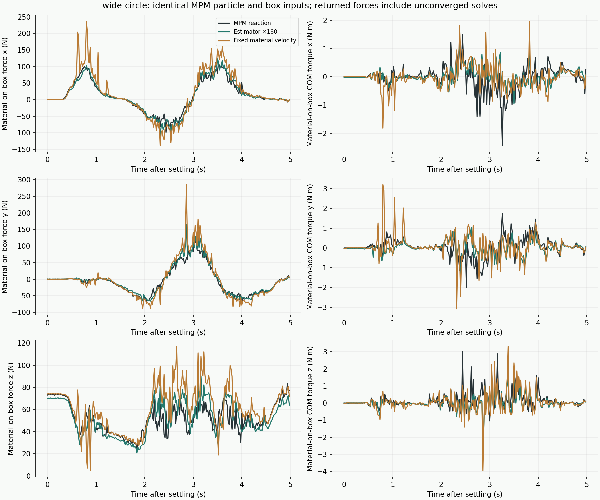
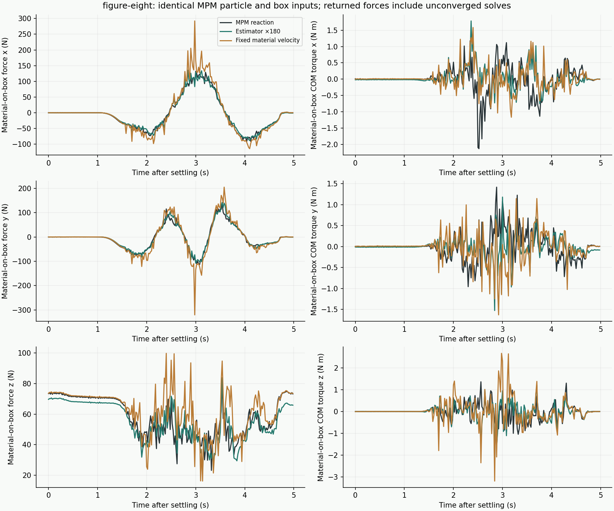
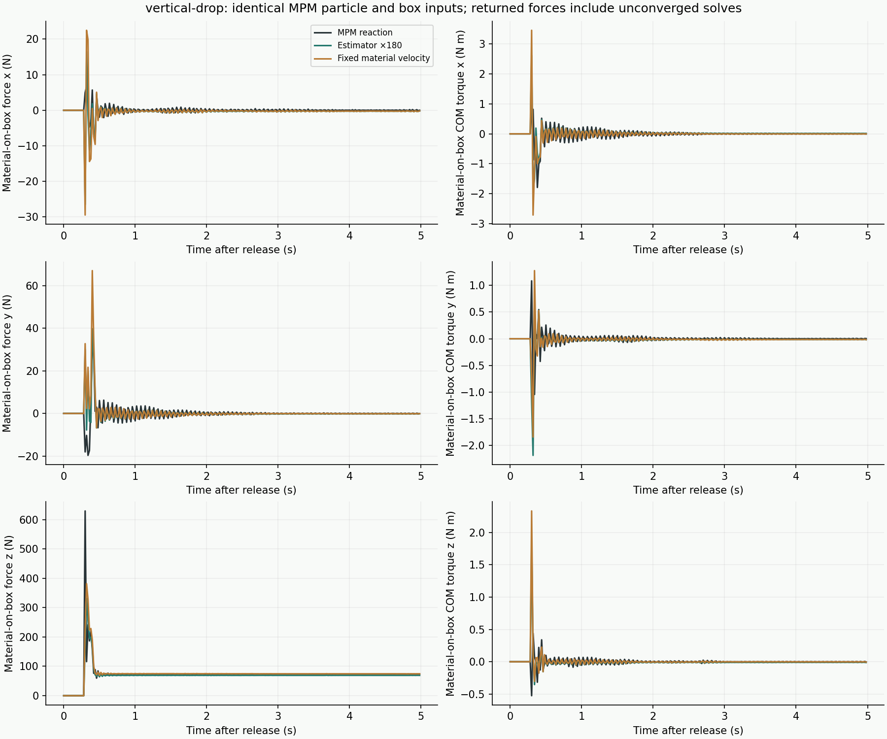
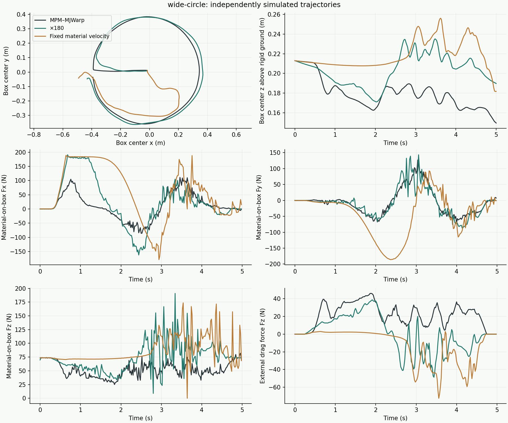
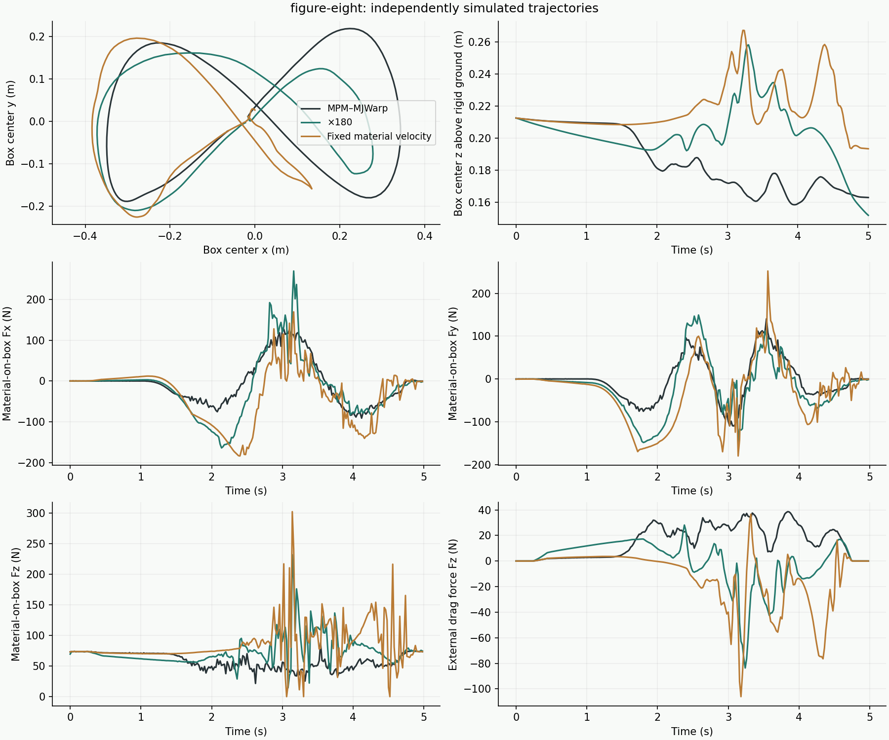

CONTACT RESPONSE / FIXED MATERIAL VELOCITY
Hold material velocity fixed during contact estimation
Test whether removing the auxiliary effective-mass response improves support and dynamic contact forces.
01 / Exact method change
Finite effective mass
u_i = predicted_contact_velocity_i − j_i / (κ m_i) Material inverse mass = 1 / (κ m_i)
Fixed supplied velocity
u_i = predicted_contact_velocity_i Material inverse mass = 0
The zero material response is used consistently in the relative contact velocity and the impulse-response matrix. No large finite multiplier or change to physical particle mass is used. The body still starts from its free linear/angular velocity and responds to the accumulated contact impulses. The particle predictor and MJWarp integration are unchanged; no MPM runs on the learned side.
Removing material mobility makes simultaneous contact updates more strongly coupled through the box. The fixed variant uses a parallel update fraction of 1 / max(contact count, 10); the finite-mass baseline uses 0.1. Both have 2,000 maximum iterations, residual tolerance 1e−9, friction 0.6 and gap stabilization 0.01. The update fraction changes iteration behavior, not the intended contact fixed point. There is no force filtering, retraining, warm start, or region selection.
02 / Reference-input reconstruction
Each estimator reads the same recorded box pose/velocity and external force. Input A uses MPM particle positions and endpoint velocities. B uses MPM displacement divided by 20 ms. C uses recurrent Transolver particles conditioned on the recorded box motion. These are offline estimates: no estimated force changes the reference box or particles. Three five-second scenes × three input types × two estimator variants = 4,500 contact solves.
| Scene | Response | Particle inputs | Force RMS error (N) | Torque RMS error (N m) | Iteration-limit steps |
|---|---|---|---|---|---|
| wide-circle | ×180 | MPM position + endpoint velocity | 18.4 | 0.87 | 0 / 250 |
| wide-circle | ×180 | MPM position + displacement / dt | 15.2 | 0.78 | 0 / 250 |
| wide-circle | ×180 | Recurrent Transolver position + displacement / dt | 75.0 | 1.05 | 0 / 250 |
| wide-circle | Fixed velocity | MPM position + endpoint velocity | 39.8 | 1.04 | 196 / 250 |
| wide-circle | Fixed velocity | MPM position + displacement / dt | 35.1 | 0.95 | 203 / 250 |
| wide-circle | Fixed velocity | Recurrent Transolver position + displacement / dt | 105.4 | 1.33 | 214 / 250 |
| figure-eight | ×180 | MPM position + endpoint velocity | 13.8 | 0.76 | 0 / 250 |
| figure-eight | ×180 | MPM position + displacement / dt | 12.3 | 0.68 | 0 / 250 |
| figure-eight | ×180 | Recurrent Transolver position + displacement / dt | 76.0 | 1.00 | 0 / 250 |
| figure-eight | Fixed velocity | MPM position + endpoint velocity | 35.4 | 0.94 | 212 / 250 |
| figure-eight | Fixed velocity | MPM position + displacement / dt | 29.2 | 0.90 | 219 / 250 |
| figure-eight | Fixed velocity | Recurrent Transolver position + displacement / dt | 104.1 | 1.30 | 242 / 250 |
| vertical-drop | ×180 | MPM position + endpoint velocity | 32.8 | 0.36 | 0 / 250 |
| vertical-drop | ×180 | MPM position + displacement / dt | 22.4 | 0.32 | 0 / 250 |
| vertical-drop | ×180 | Recurrent Transolver position + displacement / dt | 46.2 | 0.34 | 0 / 250 |
| vertical-drop | Fixed velocity | MPM position + endpoint velocity | 31.8 | 0.41 | 233 / 250 |
| vertical-drop | Fixed velocity | MPM position + displacement / dt | 19.3 | 0.37 | 234 / 250 |
| vertical-drop | Fixed velocity | Recurrent Transolver position + displacement / dt | 49.8 | 0.34 | 235 / 250 |
Reference: raw MPM material reaction averaged over matching 20 ms intervals, with torque shifted to the interval-start box center of mass. Statistics include returned forces from unconverged solves; finite values do not establish a valid contact solution.
Stationary vertical support using reference MPM endpoint velocities
| Interval | MPM reference | ×180 | Fixed material velocity |
|---|---|---|---|
| wide-circle / 0–0.24 s before dragging | 73.59 N | 70.16 N | 74.16 N |
| figure-eight / 0–0.24 s before dragging | 73.57 N | 70.20 N | 74.17 N |
| vertical-drop / 1–5 s after release | 73.58 N | 69.34 N | 74.66 N |
The 7.5 kg box weight is 73.575 N. Fixed velocity largely removes the static-support deficit; small remaining differences include recorded motion, gap stabilization and timestep approximation.
wide-circle: reference-input reconstruction

figure-eight: reference-input reconstruction

vertical-drop: reference-input reconstruction

03 / Closed-loop motion
Same frozen update-10,000 Transolver checkpoint, initial particle history, initial box state, drag target and controller as the multiplier comparison. All 16,384 particles update every 20 ms; MJWarp and the external-force controller update every 5 ms. Both trajectories last five seconds. The learned box and particles evolve using only their own states.
| Trajectory | Response | Box-position RMS difference | Material-force RMS difference | Iteration-limit steps |
|---|---|---|---|---|
| wide-circle | ×180 | 8.4 cm | 70.1 N | 0 / 250 |
| wide-circle | Fixed velocity | 26.8 cm | 133.8 N | 167 / 250 |
| figure-eight | ×180 | 6.9 cm | 63.7 N | 0 / 250 |
| figure-eight | Fixed velocity | 13.1 cm | 91.7 N | 168 / 250 |
These force differences compare diverging dynamic trajectories; they are not same-state force-estimation errors. The controller reads each simulation’s own box state, so applied drag forces can differ. All four runs completed with finite states. Fixed-mode contact solves reached the limit on 167 / 250 circle steps and 168 / 250 figure-eight steps; their returned wrenches were applied without filtering or fallback.
wide-circle: independent dynamic simulations
Left: MPM–MJWarp. Right: Transolver + fixed material velocity estimator + MJWarp. Same camera and appearance; each box uses its own dynamic state. Unconverged returned forces were applied.

figure-eight: independent dynamic simulations
Left: MPM–MJWarp. Right: Transolver + fixed material velocity estimator + MJWarp. Same camera and appearance; each box uses its own dynamic state. Unconverged returned forces were applied.

04 / Why more iterations do not resolve every failure
For each reference-input scene, we selected the MPM-endpoint snapshot with the largest fixed-mode residual. Repeating that unchanged snapshot with 2,000, 20,000 and 100,000 iterations did not meet tolerance. At the figure-eight snapshot (3.28 s), a separate linear-program feasibility check found no box linear/angular velocity satisfying all fixed normal contact conditions. At least 0.035 m/s of uniform normal-velocity slack was required. This is an incompatibility in the assembled approximate contact conditions, not evidence that the underlying MPM state is physically impossible.
The selected circle and drop snapshots passed the normal-only feasibility check, but their full frictional iterations still did not converge. Those failures are not explained by normal infeasibility; friction coupling, degeneracy and iteration behavior remain unresolved. Holding many spatially varying material velocities exactly fixed is a stronger assumption than allowing finite material response.
05 / Reproduction and checks
PYTHONPATH=examples uv run --no-sync python -m particle_nerd.transolver.closed_loop \ --reference /path/to/reference.hdf5 --checkpoint /path/to/best.pt \ --path wide-circle --output /path/to/output --fixed-material-velocity PYTHONPATH=examples uv run --no-sync python -m particle_nerd.transolver.force_ablation \ --reference /path/to/reference.hdf5 --prediction /path/to/recorded-box-rollout.hdf5 \ --case wide-circle --output /path/to/output --fixed-material-velocity
For the finite comparison, omit the fixed flag and pass --effective-mass-scale 180. Fixed mode ignores the mass multiplier. The force-ablation prediction file must use the same recorded box motion as its reference.
GPU tests passed for stationary weight support, normal impact, unchanged input velocities, baseline momentum/friction behavior and GPU-only coupled stepping. Independent checks also verified separated contact and independence from the ignored scale. Changed-file lint/format checks passed; the repository-wide changelog hook remains blocked by pre-existing unrelated entries.
All summaries and settings · Iteration-budget and feasibility diagnostics · Reference curves: circle, figure eight, drop.